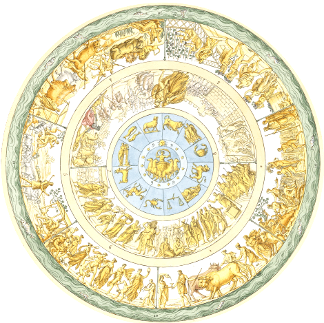

Le Bouclier d'Achille :
Dans le 42ᵉ tome des aventures d'Alix, intitulé "Le Bouclier d'Achille", l'intrigue débute sur l'île d'Ithaque, où Arbacès, ennemi juré d'Alix, découvre des parchemins révélant l'emplacement de la tombe d'Achille. Selon la légende, quiconque s'empare des armes du héros mythologique sera reconnu comme chef, offrant ainsi une opportunité de soulever la Grèce contre la domination romaine.
À un autre endroit, Alix et son fidèle compagnon Enak quittent l'Égypte pour rejoindre Jules César, engagé dans une guerre civile contre Pompée en Thessalie. Informés des intentions d'Arbacès, ils se lancent à sa poursuite pour empêcher la résurgence d'une rébellion grecque. Leur quête les conduit à Mycènes, où ils découvrent une petite armée secrète, les descendants des Myrmidons, qui veillent à la protection du tombeau d'Achille.
L'affrontement final entre Alix et Arbacès est marqué par l'intervention symbolique du bouclier d'Achille. Ce dernier, doté d'une aura quasi mystique, semble refuser de protéger Arbacès lors du duel, accentuant sa dimension légendaire.

À un autre endroit, Alix et son fidèle compagnon Enak quittent l'Égypte pour rejoindre Jules César, engagé dans une guerre civile contre Pompée en Thessalie. Informés des intentions d'Arbacès, ils se lancent à sa poursuite pour empêcher la résurgence d'une rébellion grecque. Leur quête les conduit à Mycènes, où ils découvrent une petite armée secrète, les descendants des Myrmidons, qui veillent à la protection du tombeau d'Achille.
L'affrontement final entre Alix et Arbacès est marqué par l'intervention symbolique du bouclier d'Achille. Ce dernier, doté d'une aura quasi mystique, semble refuser de protéger Arbacès lors du duel, accentuant sa dimension légendaire.